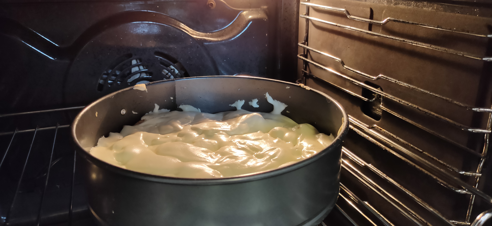
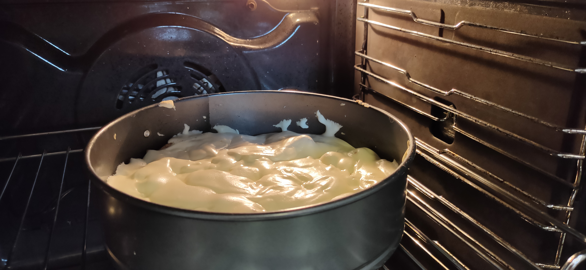

Сладкий пирог
Шарлотка
Сложность приготовления: легкий
Время приготовления: 40 мин
 

Ингредиенты:
- 2 яйца
- 1 стакан муки
- 1 стакан сахара
- корица
- кусочек сливочного масла
- щепотка соли
- щепотка соды
- 3 средних яблока
Приготовление:
- Нарезать яблоки и посыпать корицой (обязательно раньше теста, иначе оно успеет сесть)
- Взбить яйца с сахаром
- Добавить муки в смесь яиц с сахаром и ещё раз взбить
- Налить смесь на яблоки и, не перемешивая, поставить в разогретую духовку 220°С 25-30 минут
Смотрите также рецепт кекса.